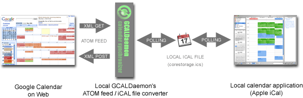
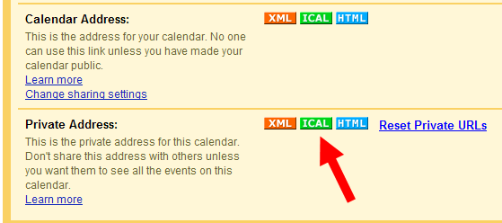
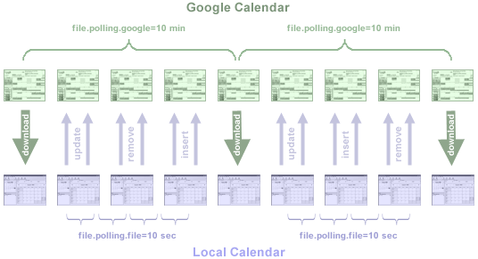
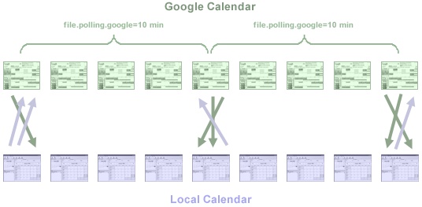
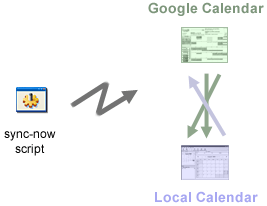
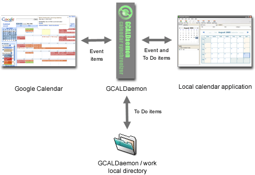

The file-based synchronization mode keeps one or more local calendar file(s) in sync with your Google Calendar and vice versa.
After installing this program, your iCal calendar should be able to subscribe and modify a remote Google Calendar.

1) Install GCALDaemon (Java 1.5 required).
sudo mkdir -p /usr/local/sbin
cd /usr/local/sbin
sudo unzip /downloads/gcaldaemon-linux-1.x.zip
sudo chgrp -R admin /usr/local/sbin/GCALDaemon
sudo chmod -R g+w /usr/local/sbin/GCALDaemon
sudo chmod 755 /usr/local/sbin/GCALDaemon/bin/*.sh
2) Put a colored label on all folders in '~/Library/Application Support/iCal/Sources'.
open ~/Library/Application Support/iCal/Sources
3) Launch iCal, and create a new calendar, maybe named 'Google'.
open -a iCal
4) Quit iCal, and see which folder doesn't have a label in
'~/Library/Application Support/iCal/Sources'
(you can't go by timestamp since all calendars will
be updated by iCal, but colored labels will show you the new folder clearly).
Hint: Look in '~/Library/Application Support/iCal/Sources/*.calendar/Info.plist'
for the name of that calendar.
5) Open the 'gcal-daemon.cfg' configuration file.
cd /usr/local/sbin/GCALDaemon/conf
open -a subethaedit gcal-daemon.cfg
6) Put the full path to 'corestorage.ics' in that new, unlabeled folder
(with no ~ shortcut) for the variable 'file.ical.path'.
# Full path of the local iCalendar file
file.ical.path=/Users/*/Library/Application Support/iCal/Sources/*.calendar/corestorage.ics
7) Encode your Gmail password with the 'password-encoder.sh'.
Input your password and press ENTER. Copy the encoded password.
cd /usr/local/sbin/GCALDaemon/bin
./password-encoder.sh
8) Put your Gmail address for the variable 'file.google.username'.
# Gmail user (your full email address)
file.google.username=example@gmail.com
9) Put your encoded password for the variable 'file.google.password'.
# Gmail password (use password encoder!)
file.google.password=31260V7mc34jV22c
10) Copy the iCal URL for your calendar's Private Address on the Calendar Settings page.

11) Put your iCal URL for the variable 'file.private.ical.url', without protocol and hostname.
# URL (without hostname) of the Google Calendar's private ical file
file.private.ical.url=/calendar/ical/example%40gmail.com/private-495c0f1bfg/basic.ics
12) Set the 'file.enabled' property to 'true'.
# Enable iCalendar file listener/synchronizer
file.enabled=true
13) Start GCALDaemon ('standalone-start.sh' or 'sync-now.sh').
cd /usr/local/sbin/GCALDaemon/bin
./standalone-start.sh
INFO | GCALDaemon V1.0 beta 16 starting...
INFO | Local time zone is Pacific Standard Time.
INFO | HTTP server disabled.
INFO | RSS/ATOM feed converter disabled.
INFO | Start listening file /Users/user/Library/.../iCal/corestorage.ics...
INFO | File listener started successfully.
INFO | LDAP server disabled.
INFO | Gmail notifier disabled.
INFO | Sendmail service disabled.
14) Start iCal.
Items added (or modified/deleted) to your iCal will now automatically appear in your Google Calendar.
15) Then you can create a System Daemon from GCALDaemon using .
To get started, click on 'Assistant' in the toolbar.
Keep an application/script always running
Label: net.sf.gcaldaemon (leave 'Launch only when I log in' checked)
Application/script: /usr/local/sbin/GCALDaemon/bin/standalone-start.sh
The 'file.offline.enabled' option is the only one difference between the
offline (dial-up) and online (fast) Google Calendar synchronization.
To enable GCALDaemon's offline synchronization algorithm,
follow the step-by-step instructions about the
Desktop configuration (Permanent Internet connection),
then set the 'file.offline.enabled' property to 'true'.
# Turn it on when you use dial-up connection (default is "false")
file.offline.enabled=true
Permanently connected (always online) mode:
GCALDaemon downloads your Google Calendar's iCalendar file every 10 minutes
(see the 'file.polling.google' property). In the meantime
GCALDaemon's file scanner listens the changes in the local iCalendar files,
and updates the remote Google Calendar events almost immediately,
using small portion of XML messages
(see the 'file.polling.file' property).
This mode is much more faster than the offline algorithm,
but does not support offline working.

Dial-up (offline-enabled) mode:
GCALDaemon compares your Google Calendar (if available) and local iCalendar file every 10 minutes,
and does all modifications together.
If it is unable to do so because the network is unavailable, it tries again when it detects network presence.
The average network usage of these (online / offline) modes are equal.
This mode is particularly useful for MacBook users and for third-party phone/PDA synchronizers.

Sync-on-demand:
This feature is a variant of the offline/dial-up mode.
When you launch the 'GCALDaemon/bin/sync-now.sh' script,
GCALDaemon synchronize your calendar files, then stop.
You can create a shortcut icon on your desktop for the script,
or you can combine it with Lingon.
The 'sync-now' script knows less than the service-based offline synchronizer (LDAP, etc),
but this mode is the optimal for systems with less than 256 MB of RAM.

To set up multiple file listeners, you need to configure
a path-username-password-url set for each of the Google Calendars you want to synchronize (the first listener definition is
unindexed, the others are indexed from '2'):
# First calendar
file.ical.path=/Users/*/Library/Application Support/iCal/Sources/*.calendar/corestorage.ics
file.google.username=example@gmail.com
file.google.password=31260V7mc34jV22c
file.private.ical.url=/calendar/ical/example%40gmail.com/private-495c0f1bfg/basic.ics
# Second calendar
file.ical.path2=/Users/*/Library/Application Support/iCal/Sources/*.calendar/corestorage.ics
file.google.username2=account@gmail.com
file.google.password2=b34jV22c95c0f1
file.private.ical.url2=/calendar/ical/495c0f1495c0f1/private-0f1b495cfg/basic.ics
# Third calendar
file.ical.path3=/Users/*/Library/Application Support/iCal/Sources/*.calendar/corestorage.ics
file.google.username3=gmailuser@gmail.com
file.google.password3=95c0f1b4jV22c
file.private.ical.url3=/calendar/ical/otheruser%40gmail.com/private-f1b495c0fg/basic.ics
File-based synchronizer can convert RSS/ATOM XML files to iCalendar format,
therefore you can read news, blogs and tweets with Apple iCal.
This feature makes copying feed entries to Google Calendar a simple copy/paste operation.
Once the entry copied to the Google Calendar, you can edit it as an average calendar event.
Another advantage is that you can add directly To Do (Task) items to the converted calendar.
Note: feed converter must be enabled (feed.enabled=true).
# Google Calendar
file.ical.path=/Users/*/Library/Application Support/iCal/Sources/*.calendar/corestorage.ics
file.google.username=example@gmail.com
file.google.password=31260V7mc34jV22c
file.private.ical.url=/calendar/ical/example%40gmail.com/private-495c0f1bfg/basic.ics
# BBC Technology RSS News (without username/password)
file.ical.path2=/Users/*/Library/Application Support/iCal/Sources/*.calendar/corestorage.ics
file.private.ical.url2=http://newsrss.bbc.co.uk/rss/newsonline_uk_edition/technology/rss.xml
# Twitter ATOM feed (with username/password)
file.ical.path3=/Users/*/Library/Application Support/iCal/Sources/*.calendar/corestorage.ics
file.google.username3=twitterusername
file.google.password3=9f2cb4j5c0f1V2g
file.private.ical.url3=http://twitter.com/statuses/user_timeline/feednumber.atom
1) If there is no need for HTTP-based synchronization, set the
'http.enabled' property to 'false' (in 'gcal-daemon.cfg').
We recommend to set this for the lower memory usage and for the higher security.
The authentication and the ATOM-based communication between Google and
GCALDaemon is secure (SSL) and cannot be intercepted by a third party.
2) Put a 'work.dir' property into 'conf/gcal-daemon.cfg'
to specify the work directory of GCALDaemon.
This directory is the 'GCALDaemon/work' folder by default.
For people that use multiple operating systems it is handy that the work
directory is another directory.
Also, it's more secure if the work files wouldn't reside in the program
directory but on eg. an encrypted partition.
Note: After you set up a new directory,
you may copy the old work folder's content
into the new one.
# GCALDaemon's work directory
work.dir=d:/secure/work
1) Default synchronization:
iCal alarm property synchronized unidirectionally (move property from iCal to Google Calendar).
Google Calendar supports discrete alarm values only (5-10-15-20-25-30-45 mins, 1-2-3 hours,
1-2 days, or one week). GCALDaemon converts different values into such an values
(e.g. 17 min to 15 min, 6 day to one week, etc).
Category, priority and URL properties are unsupported by the Google Calendar API.
| iCalendar event property |
Google Calendar event property |
Synchronization |
| summary |
title |
bidirectionally |
| location |
where |
bidirectionally |
| description |
content |
bidirectionally |
| created date |
published date |
bidirectionally |
| start date |
start date |
bidirectionally |
| end date |
end date |
bidirectionally |
| all day event (true / false) |
all day event (true / false) |
bidirectionally |
| status (tentative / confirmed / canceled) |
status (tentative / confirmed / canceled) |
bidirectionally |
| classification (public / private) |
visibility (public / private) |
bidirectionally |
| transparency (transparent / opaque) |
transparency (transparent / opaque) |
bidirectionally |
| list of attendees |
list of participants |
bidirectionally |
| recurrence rule (including exceptions) |
recurrence rule (including exceptions) |
bidirectionally |
| recurrence-id |
original event |
bidirectionally |
| alarm |
reminder |
one-way only (iCal to Google) |
2) Extended synchronization:
GCALDaemon is able to synchronize on these four iCalendar property in 'extended mode':
alarm (two-way), category, priority and URL.
This is useful if you'd like to sync Google Calendar with your PDA (in dial-up or sync-on-demand mode).
To enable this feature set the 'extended.sync.enabled' property to 'true'.
Note: Needless use of the extended mode (especially with large calendars) can significantly reduce the performance.
# Enable to sync alarms, categories, urls and priorities
extended.sync.enabled=true
| iCalendar event property |
Google Calendar event property |
Synchronization |
| alarm |
reminder |
bidirectionally |
| category (Business, Birthday, etc) |
hidden |
bidirectionally |
| priority (low, medium, high) |
hidden |
bidirectionally |
| URL |
hidden |
bidirectionally |
3) Google Calendar - unlike iCal - does not support To Do (Task) items.
Therefore GCALDaemon stores To Do items in a local file storage.
This storage is the 'GCALDaemon/work' folder.
Before uninstall an older GCALDaemon version, you should archive this directory.
If the new GCALDaemon installation finishes, you can restore
the previous 'work' folder, including the old To Do items.
About the 'online' synchronization: to avoid data loss, do not modify
your local calendar files when GCALDaemon is not running properly (or stopped)
and the 'file.offline.enabled' property is 'false'.
Note: GCALDaemon automatically creates daily backups of each and every local
and remote calendar into the 'work/backup' subdirectory,
so your files are always safe and secure.

4) You can configure your Apple Address Book to search directly
your Gmail Address Book for email addresses, via LDAP protocol.
For more information, see
'Access Gmail contacts from Mozilla Thunderbird'.
After the setup launch Address Book, open its 'Preferences', and go to the 'LDAP' tab.
Click the [+] button to add a new server with the following configuration:
name: Gmail
server: localhost
search base: empty
port: 9080
Range: Base
autentification: empty
authentification method: none